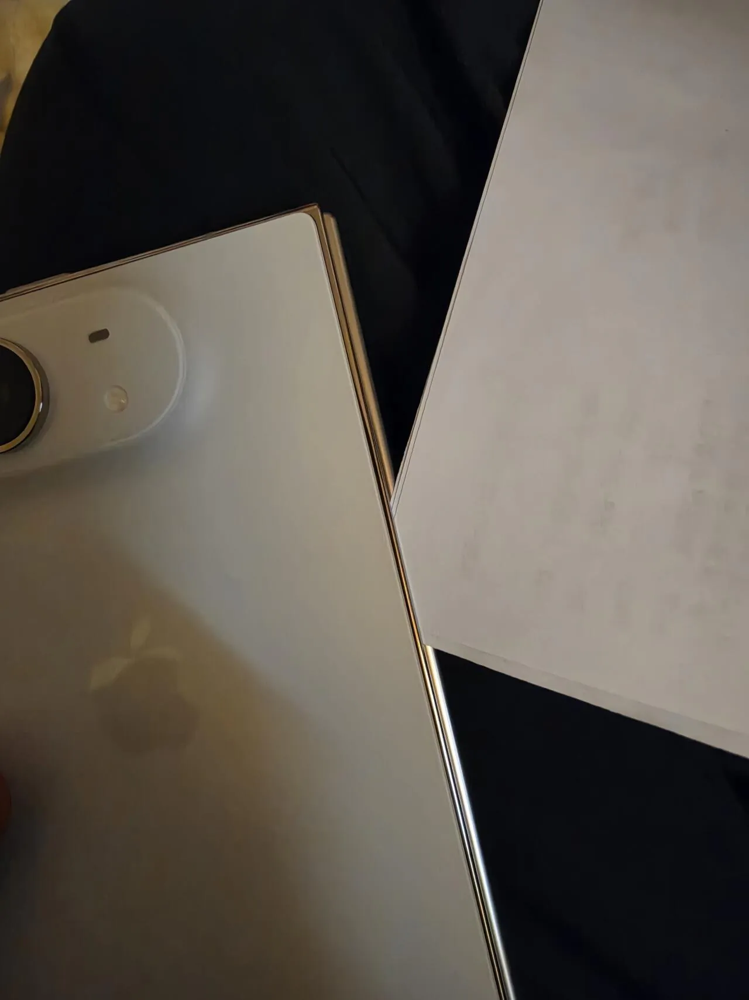
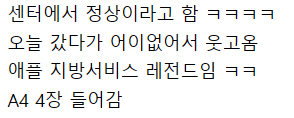
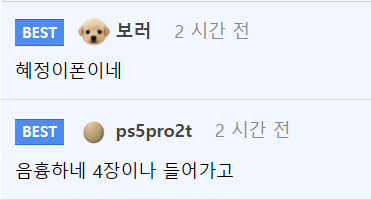

방수방진 IP68 힌지에 A4용지가 4장이나 들어가는 혜정이폰이라고함



방수방진 IP68 힌지에 A4용지가 4장이나 들어가는 혜정이폰이라고함
A4 = Apple 폰에 4장 들어간다는 뜻
G7 ?
아 ㅋㅋ 애뽈~이 아니고 에이포~ 라고 하는 거였구나?ㅋㅋ
아.. 그래서 혜정이는 글로벌 스텐다드란 뜻이구나.
혜정이가 네 명이랑 동시에 한 여자였던가?
네번가능 와꾸
너가 선택한 아이폰
근데 지방서비스가 있음? 애플 공식은 전부 서울 경기도에 있지 않나
직영말고 하청임 , 거기 권한도 없고 걍 배터리 수리나 하러 가는곳이라고 생각하는게 편해 저것도 직영 애플 스토어 가면 모를일이다
1세대폰은 절대 사면 안된다 이말이야 ㅋㅋ
ㅋㅋㅋㅋㅋㅋㅋㅋㅋㅋㅋ
4장
진짜 이쯤되면 누군가 혜정이 진짜 찾아서 유튜브 방송하면 조회수 얼마나 나올까?
해정이니?
애플 A/S 겪어보고 애플에서 탈출함
거긴 방수방진 아니라니까 ㅋㅋㅋㅋ 내부 부품만 방수등급 받은거임 ㅋㅋㅋㅋ
관련영상보니까 ip68 검사대상에 힌지뺏을거라던데 ㅋㅋ
어엉 빼고 본체만 검사해도 IP68 등급 받는 꼼수 이용한거 ㅋㅋㅋㅋㅋㅋ오목교 검사하니까 힌지 부위 허벌이라서
일상 생활하면서 무조건 먼지 들어가게 되어있고 또 들어가면 힌지가 망가지기 쉬운 구조라서
이번 아이폰 듀오 1세대는 거르는게 맞음 ㅋㅋ

기기 스펙이 저정도 퍼포먼스라 정상 판정 내린 거 아님? 그거대로 골때리지만
아무튼 방수입니다~
힌지에 A4 4장 들어가면 폰이 아니라 클리어파일이지 ㅋㅋ
0.4~0.5mm 유격이네 ㅋㅋ
정상 맞음. 액정쪽은 방수 잘됨ㅋㅋㅋ
300만원 폰이 이게 맞냐..
애초에 폴드도 힌지 빼고 방수방진 등급이야. 쟤만 특별한게 아님.
그렇게 따지면 폴드8은 디스플레이가 직접적으로 물을 먹는데 그것도 정상이라는데?
시발 진짜 빌드퀄리티의 애플이었잖아 이번거 왜이렇게 가관이냐
이딴걸 내놓고 뻔뻔하게 옛날폰은 조잡하다 어쩌고 개소릴 했으니 시발 사과냥이 새끼
짱ㄱㅐ도 삼성 따라하다보니 니네보다 잘만든다 병신들아
방수방진은 힌지 제외라서 ㅋㅋㅋ